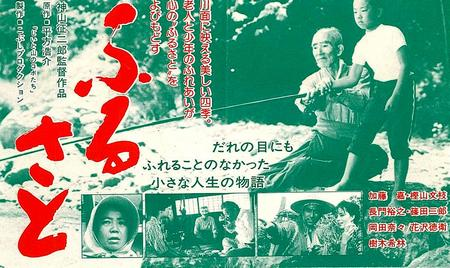
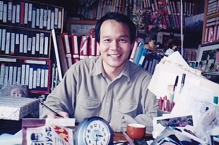
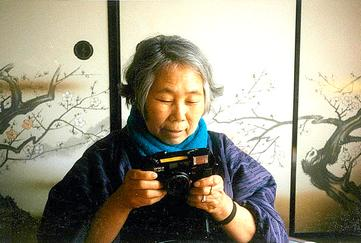
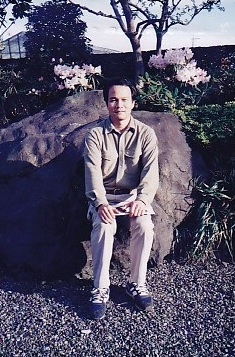

コラム
映画「ふるさと」のことなど

朝もやの中、少し増水した渓流を、蓑を着た老人とゴム長靴を履いた少年が渉ってゆく.....少年がアマゴを狙って釣り竿を振り、流れの中を目印がゆっくりと動いてゆき、そして止まる！

二十歳の冬（1982年）、学校の寮で新聞をパラパラと見ていると、一枚の映画のチラシが混ざっていました。これは面白そうな映画だなと思って自転車をキーコキーコとこいで中央公民館まで行って見たのが「ふるさと」と私の出会いです。
中部地区の各公民館、市民会館などを巡回して上映する形で公開されたこの映画は、主演した老人役の加藤嘉さんが、1983年に、第13回モスクワ国際映画祭 最優秀主演男優賞と第38回毎日映画コンクール 演技特別賞を受賞しており、神山征二郎監督の出世作となりました。モスクワの映画祭では、上映後満員の観客からスタンディングオベーションが沸き起こったそうです。
舞台は、今はもうダムの底に沈んで無くなってしまった岐阜県揖斐郡の徳山村。ダムの建設で激動する村を背景に、老妻を亡くして痴呆症になってしまった老人と、隣家の少年とのアマゴ釣りを通してのひと夏のふれあいを描いた作品です。
私にも、やはり釣り好きでやさしい祖父がいました。アマゴを一緒に釣った経験は無いのですが、冬の日だまりで寒バヤをサシを餌にして釣った記憶があります。スクリーンの中の加藤嘉さんの笑顔と祖父の顔とがダブリます。
この映画が、テレビの日曜映画劇場で放映された時には、あの淀川長治さんの解説までもが省略されて、ＣＭを除く放送時間全てが映画に割り当てられていました。 淀川さんやスタッフの方々の想いを感じることが出来てとても感激たものです。
映画の舞台となった徳山村には、増山たづ子さん：ウィキペディアよりというおばあさんがいまして、民宿をやっておられました。映画のスタッフは増山さんの民宿などに泊まりながら、ロケを進めていったそうです。
増山さんご自身も映画のラスト近くでチラッと登場しています。
増山さんはアマチュア写真家として有名で、沈みゆく村のあれこれを「ピッカリコニカ」を駆使して活写した写真集「故郷」、「ありがとう徳山村」や聞き語りのエッセイ集「ふるさとの転居通知」そして民話の本など、多数を出版しています。また、1984年エイボン女性年度賞の『エイボン女性功績賞』を受賞しています。1985年に増山さんは徳山村の廃村に伴い、岐阜市郊外に転居されました。僕は1989年から名古屋で就職しましたので、社会人になってからも、数回転居先の増山さんを訪れたことがあります。下の写真は増山さんが何代目かのピッカリコニカで自ら撮して下さったものです。印画紙もしっかりコニカ・プリントでした。



しかし、残念ながら、2006年に移転先の岐阜市で亡くなられております。増山さんが遺された膨大な量の写真・ネガは今も大切に保存・研究されており、最近では2014年に「増山たづ子 すべて写真になる日まで」というぶ厚い写真集も発行されています。
この映画を見たのち、大学四年の夏（1984年）に徳山村をバックパッキングで訪れたのですが、あいにくの台風で山と川は大荒れ。増山さんの民宿を訪れたところ、こんな大雨の日に外で寝るのは無茶だと一喝されて、泊めていただきました。その後、民宿の前の小さな沢に釣りに行き、テンカラでいい型のアマゴを３尾釣りました。その釣行の様子はこちらのページにまとめてあります。
と、こうして書いてきたものの、この映画についてはあまりにも思い入れが深すぎて、とても書き切れません。長い間待ち望まれていたDVD化がされていますのでぜひご覧ください。DVDのパッケージには、神山征二郎監督のスペシャルインタビューも封入されています。
映画は、静かな山肌がダム建設のため、ダイナマイトで爆破されるシーンから始まっています。
コラム 目次へ
サイトマップ
ホームへ
お問い合わせ